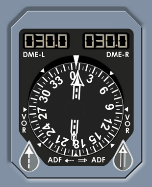

Digital Distance Radio Magnetic Indicator
DDRMI Description
VOR DME - Counters Indicate DME distance to the tuned VORs.
HDG FLAG - Appears when the ADIRS heading signal is invalid, or the RMI fails, or power supply fails.
BEARING POINTERS - Indicate the magnetic bearing to VOR 1 or ADF 1 (if installed), to VOR 2 or ADF 1 (if installed) on non-overwater airplanes, or ADF 2 on overwater airplanes.
COMPASS CARD - Displays the bearing scale. Normally supplied from ADIRU 1 unless CAPT ON 3 is selected on the SWITCHING panel.
VOR/ADF FLAGS - Appear when the selected VOR or ADF (if installed) receiver fails, or the ADIRS heading signal is invalid, or the RMI fails, or the power supply fails. Associated pointer remains at the last valid position.
|  |
VOR/ADF SELECTORS - Allows either the VOR or ADF (if installed) to be displayed by the bearing pointers.